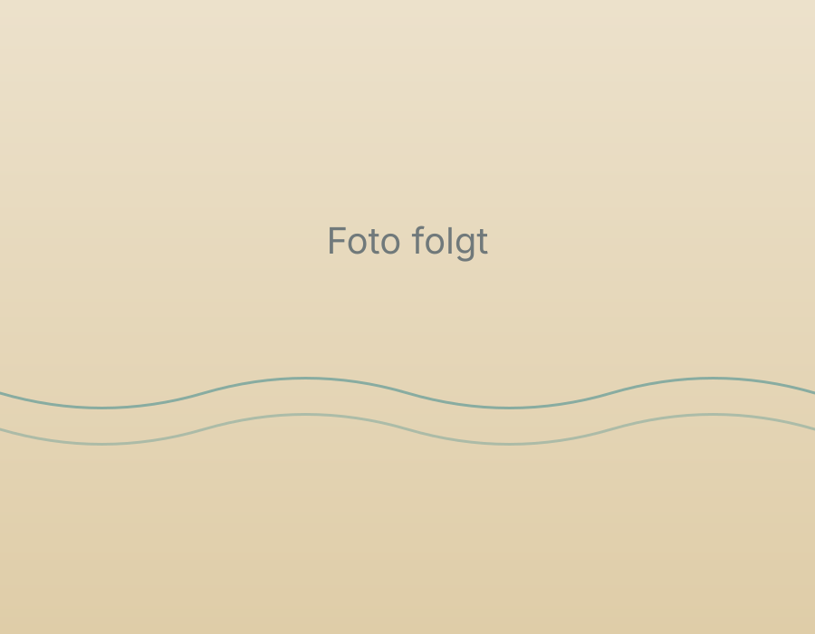

Meist zu Fuß, mit dem Rad — oder mit Genehmigung
In der Inselstadt fährt kaum ein Auto. Du bist zu Fuß, mit dem Rad, dem Inseltaxi oder der Kutsche unterwegs. Mit eigenem Auto brauchst du für die Stadt eine Sondergenehmigung.
Auto nur mit Sondergenehmigung in der Stadt: Autos sind auf Norderney grundsätzlich erlaubt und können mit der Fähre übergesetzt werden — nur die Zufahrt in die Inselstadt selbst braucht eine Sondergenehmigung, die du bei der Überfahrt mit der Reederei Frisia bekommst. Im Ortsgebiet gilt außerdem ganzjährig ein Zonenhalteverbot mit Parkscheibe (max. 30 Minuten). Ausführliche Verkehrsregeln findest du bei den Wichtigen Infos.
Vom Hafen zum Ort
So kommst du an
Ankunft am Hafen
Die Fähre der Reederei Frisia legt am Hafen im Osten der Insel an, rund 2,5 km vom Ortszentrum entfernt.
Zu Fuß oder mit dem Rad
Ein befestigter Weg führt in circa 30 Minuten zu Fuß bzw. rund 10 Minuten mit dem Rad vom Hafen in den Ort.
Inseltaxi
Wer nicht laufen möchte oder viel Gepäck hat, nutzt eines der Inseltaxis, die am Hafen auf ankommende Fähren warten.
Gepäcktransport
Für Koffer gibt es einen separaten Gepäcktransport-Service zwischen Hafen und Unterkunft — Details bei der Tourist-Information.
Fahrradverleih
Rad leihen & direkt losfahren

Rad Toni
Verleih, Verkauf, Beratung und Reparatur an drei Standorten auf der Insel — von Cruisern mit breiten Reifen über Lastenräder bis zu E-Bikes für den Wind.
Zuletzt aktualisiert: 16.11.2026 · Von uns zusammengestellt, ohne Gewähr. Du bist der Betrieb? Übernimm deinen Eintrag. · Fehler melden

Radstation Düne (Beispiel)
Sommer: täglich 8–19 Uhr · Winter: Mo–Sa 9–17 Uhr
So sieht ein Fahrradverleih aus: Räder, E-Bikes und Anhänger. Diesen Betrieb gibt es nicht.
Zuletzt aktualisiert: 15.11.2026 · Angaben vom Betrieb, ohne Gewähr · Fehler melden
Weitere Fahrradverleiher
Die Insel hat mehrere Verleihstationen mit Reservierung im Voraus. Eine laufend aktualisierte Übersicht aller Anbieter findest du hier.
Du hast selbst einen Betrieb auf Norderney? Trag ihn kostenlos ein.
Kutsche & Sonderfahrten
Gemütlich zur Weißen Düne
Pferdekutschen bringen Ausflügler entspannt zur Weißen Düne im Osten der Insel — eine beliebte Alternative zum Radweg, besonders mit Kindern oder bei wenig Zeit. Abfahrtsorte und aktuelle Preise erfragst du direkt bei der Tourist-Information im Conversationshaus.
Zur Weißen Düne
Der Guide ist kostenlos und unabhängig
Keine Werbung, keine Buchungsgebühren. Wenn er dir im Urlaub geholfen hat, freue ich mich über eine kleine Unterstützung.